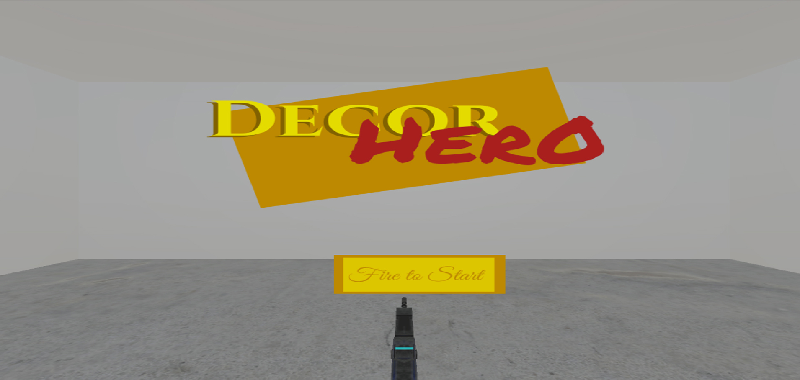

Level 2: Projects
Welcome to the portfolio site of Paul Quinones. A place where you can see projects he has worked on along with some details about him.
Featured projects are games with mechanics like platforming to FPS decorator to bear driving.
Projects - Developer

Hyper Bimbo Beats
Hyper Bimbo Beats is a Mobile Rhythm Survival Game released on iOS and Android!Published by Super Pose Press & Created by Plunder Inc
Hyper Bimbo Beats was built in Unity for mobile devices. My Role as Game Play Programmer / Architect was to create systems for managing the game to the beat of Music. This involved creating a Beat Management system that handled movement, animation, and audio for the game. Other systems involved using the Unity input system together with Game Events to trigger user dragging and releasing within the game. As the sole programmer the main focus was to build tools and structures for Designers, Artists, and Audio Engineers to leverage in putting the game together.
Download Here:


Garment Digital Twin
Garment Digital Twin is Fashion Design Software focused on reducing waste!Published by Clothing Tech LLC
Garment Digital Twin is Fashion Design Software built for both Windows and Mac systems. My role as a Software Developer on this project was to work together with UI/UX Designers to build out core functionality. This involved building functionality in Unity to allow users to create garments and add on various features such as fabrics and buttons. Part of the work involved setting up Shaders through Shader Graph and building out code that would in realtime map out the different textures for fabrics on to a Garment. I also build out capabilities allowing users to import 3D files from cloud based systems into the application mapping out 3D data for visualization.
Al Dente
Al Dente The Pasta Escape Platformer for Desktop and Web!Created by Plunder Inc
Al Dente is a 2D Platformer created using Unity for both Web and Windows. My role as programmer was to build out the core functionality of the different jumping platforms, game manager to handle different states, plugging in audio triggers, and creating tools to streamline design work. Part of the work done involved creating platform behaviors that allowed platforms to crumble and destroy or just rotate in place or even drop on a touch. Fields were exposed to allow the Audio Engineer to plug in sound effects created through FMOD.
Play Here:


Decor Hero
Decor Hero The FPS Sandbox Decorating Game!Created by Paul Q - Solo Dev
Decor Hero was built for Windows PCs during the Global Game Jam making use of Unity. As the sole developer on this game I was responsible for building out core systems such as changing ammo, shooting paint onto walls plus furniture, and laying down flooring. This FPS features standard mechanics seen in typical FPS games such as shooting different types of ammo, jumping plus moving, and a HUD to inform the players on what design tools they are using to decorate this sandbox of a room.
Canceled Noise
Survive The Twisted Grid Puzzler!Created by Paul Q - Solo Dev
Canceled Noise is a simple grid based game where players have to avoid getting caught in lit up squares long enough or it is game over. The game was built in Unity for Web making using of the Unity Input Manager. As the Sole programmer I was responsible for building out the basic game mechanics such as moving from square to square and changing between game states.
Play Here:
Projects - Writing
Collective Encounters Vol. VII
5th Edition Encounter - "Sound of Sweet Workplace..."Published by Storytelling Collective
2023 Paul featured in a compilation of Dungeon and Dragons 5e Encounters. In "Sound of Sweet Workplace...", players assist a writer looking for the perfect workplace. Check out the compilation here: https://www.dmsguild.com/product/424425/Collective-Encounters-Vol-VIIPaulPrograms on YouTube
PaulPrograms PaulPrograms goal is to provide a look behind the scenes of game development to help developers out there learn more about game mechanics.
Watch Here: